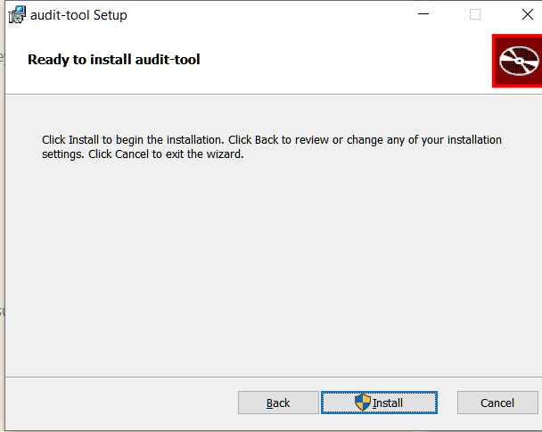
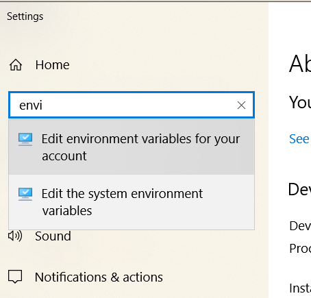
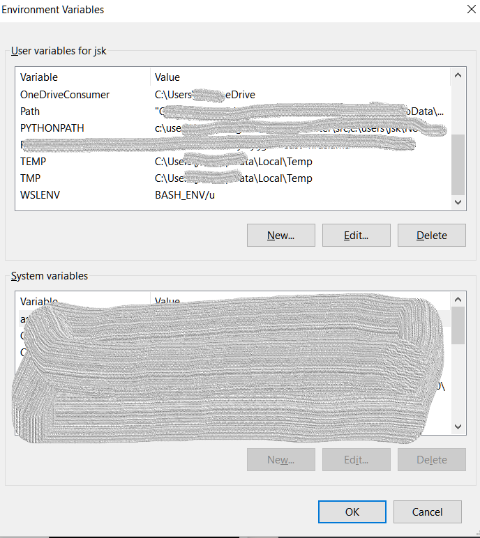
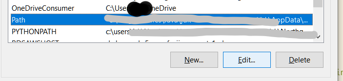

Audit Tool Installation
Version Information
This document refers to the version v1.0-alpha of audit-tool
New In Version 1.0
Version 1.0 is built and packaged under the most current LTS (Long Term Support) version of Java, 17. It exploits a packaging utility which provides native installation packages on supported MacOS, Debian, and Windows 10 platforms. This provides:
- No requirement for pre-installed Java - Audit-tool provides its own JRE (Java Runtime Engine), at JRE 17.3
- No need to configure a new install.
- Much simpler configuration: shell and Powershell scripts are no longer required.
Supported Platforms
- Windows 10
- Mac OS X 11.6 (Big Sur) or earlier 11. MacOS 10 version have not been tested.
- Debian 10 (Buster)
Note: Release v1.0-alpha does not require supporting packages such as: - Powershell 3.0 on windows - gnu coreutils on MacOS - Java
Download
Releases are available to download on asset-manager-code Releases
v1.0-alpha Download
Please refer to download instructions specific to this release in v1.0 alpha Github release For information on validating the download's integrity, please refer to Appendix I - Download integrity validation
Windows download
Installation
Windows installation
Run the launcher audit-tool-1.0.exe
Note if the installer fails to launch within a minute, it may be because there is an existing audit-tool
installation. Use Settings | Control Panel | Apps | Uninstall programs to remove it.
Note The installer may take a few moments to launch, or to show a selection of folders, if that option is chosen (see below)

If audit tool was installed when you launched, you mAY have an opportunity to choose your action:

You can choose your installation directory:

Note if you choose the default installation directory, audit-tool will be available to all users of the computer on which it is installed.

Setting path
audit-tool still needs to be launched from a console window (such as Windows Terminal or Fluent Terminal ). You may find it helpful to add its location to your PATH.
Settings (You can reach this with the shortcut WindowsKey+Pause) --> find
 Edit Environment variables

Select 'Path' and click 'Edit' as shown here:
 You'll see each line. Add the line of the installation directory.

You will see a table of your environment variables.
Add the last line (the default installation is shown as an example)

MacOS installation
Open the downloaded package:

and drag 'audit-tool.app' to '/Applications'
Debian installation
Values in this table are referred to in the instruction as {Property}. (eg, {Package name})
| Property | Value |
|---|---|
| Application name | audit-tool |
| Application version | 1.0-alpha |
| Package name | audit-v1 |
| Package-Release | 1 |
| Package File name | audit-v1_1.0-alpha-1_amd64.deb |
| Install location | /opt/audit-v1 |
| Executable | /opt/audit-v1/bin/audit-tool |
Download: TODO: web loc audit-v1_1.0-alpha-1_amd64.deb into some_folder
Install: sudo apt install -f some_folder/audit-v1_1.0-alpha-1_amd64.deb
This creates a package in the Install location above, overwriting existing contents and configurations.
There are several options for general user access:
1. Add /opt/{Package Name}/bin to the path of any users who use it.
2. Create a symbolic link in a generally public path: ln -s /opt/{Package name}/bin/audit-tool
3. Use the update-alternatives scheme to install the version into a list of choices (to allow multiple global installations). While this is more cumbersome, it is more sysadmin friendly than writing directly into /usr/local/bin.
It also automatically creates a link into any directory you choose (in this example, we use /usr/local/bin, but you're free to create your own distribution means.)
Suppose you want to install a new version and retain the older one. Since BDRC always changes the package name on every release, you would install them separately. For this example, we've installed two versions: audit-tool-v1 and audit-tool-v1.1[^fcf50797]
[^fcf50797]: v1.1 does not exist - for example only
To configure for easy change over, we would:
$ sudo update-alternatives --install /usr/local/bin/audit-tool audit-tool /opt/audit-v1/bin/audit-tool 50
$ sudo update-alternatives --install /usr/local/bin/audit-tool audit-tool /opt/audit-v1.1/bin/audit-tool 55
You can see the results here, by invoking the config switcher:
$ sudo update-alternatives --config audit-tool
There are 2 choices for the alternative audit-tool (providing /usr/local/bin/audit-tool).
Selection Path Priority Status
------------------------------------------------------------
* 0 /opt/audit-v1.1/bin/audit-tool 55 auto mode
1 /opt/audit-v1.1/bin/audit-tool 55 manual mode
2 /opt/audit-v1/bin/audit-tool 50 manual mode
Press <enter> to keep the current choice[*], or type selection number:
You would simply press 1 or 2 here to change the versions you want users to run.
Configuration
This section applies to all platforms.
audit-tool now uses the app/ subfolder of its installation directory for all its configuration. This file is generated by the install process. Changes you make to it will be overwritten when the application is re-installed.
This configuration replaces the AT_HOME and CONFIG_ATHOME settings of prior releases. Users with write permission can simply edit the app/ files:
| File | Purpose |
|---|---|
| audit-tool.cfg | Generated list of complete properties to launch the application. Changes to this list are unsupported |
| shell.properties | Parameters for tests (such as names of directories, limits and error overrides) |
| log4j2.properties | Logging control |
Detailed configuration is described in AuditToolOperation-1.0-alpha.md
Guidelines for Updating an existing installation
Installation overwrites any prior installations.
It is advisable to save existing configurations in the app/ folder of the install and *carefully merge them into a new install.
Appendices
Appendix I: Download integrity validation
BDRC uses the best practice SHA512 algorithm to calculate the thumbprint of its release binaries. This section provides instructions on how to generate a SHA512 digest and compare it with the value given on a release website.
Windows 10.
Method 1: Windows builtin certutil
certutil -hashfile c:\Users\JDoe\Downloads\someFile SHA512
Method 2: Power shell
Get-FileHash -Path c:\Users\JDoe\Desktop\abc.exe -Algorithm SHA512
Debian
sha512sum _someFile_
MacOS
sha512sum _someFile_